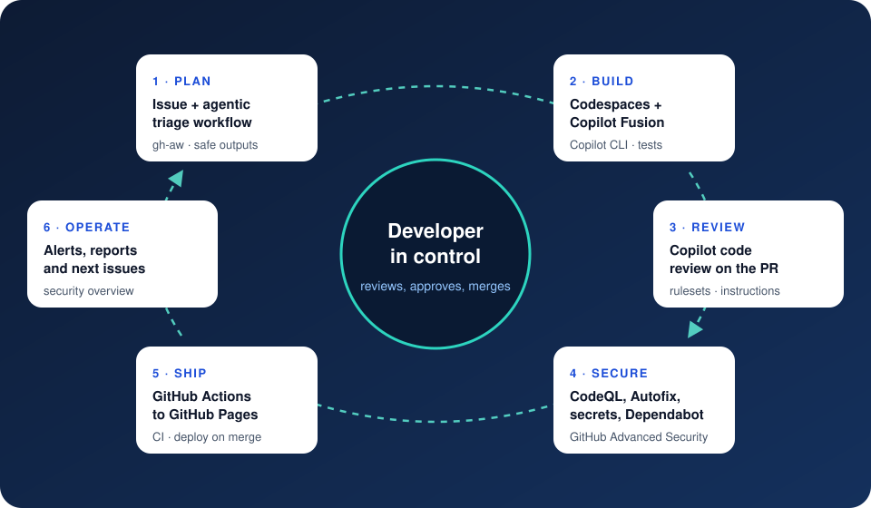

The story
Monday, 08:30, Contoso Tower, Jakarta
Daniel, Contoso's CTO, opens the weekly engineering stand-up with one slide from GitHub's Agent-Native Engineering System deck: 14x commit growth this year. “Our competitors ship faster because their developers direct agents instead of typing every line. This week we prove we can do the same, safely.”
“Start with something everyone can see: our public company profile. It has to be live on GitHub Pages by Tuesday afternoon, Lina needs a Careers page, and Raka signs off security before anything ships.”
The cast
The agentic SDLC you will run
Every chapter is one stage of the same loop. Agents do the repetitive work at each stage; you stay in control of what gets merged and shipped.

Seven chapters, two days in the story
The chapters follow the steps in the deck. Each one opens with a scene, then gives numbered steps with real, annotated screenshots: the orange numbers in each picture match the numbered explanations under it.
- Mon 09:00
1. Prepare the GitHub repo
Create the repository from the starter template, switch on GitHub Pages and ship the first deployment.
- Mon 10:00
2. Agentic SDLC in a codespace
Open a codespace, describe an issue-triage agent in plain language and let GitHub Agentic Workflows run it.
- Mon 13:00
3. Build with Copilot Fusion
Switch Copilot CLI to Copilot Fusion and build Lina's Careers page from the triaged issue.
- Mon 15:00
4. Copilot code review
Ask Copilot to review the pull request, act on its comments and make review automatic with a ruleset.
- Tue 09:00
5. Code security
Turn on CodeQL, fix a real cross-site scripting bug with Copilot Autofix and see push protection stop a secret.
- Tue 11:00
6. Dependabot
Find the vulnerable dependency, merge Dependabot's fix and keep actions and packages current.
- Tue 14:00
7. GitHub Advanced Security
Review the security overview, map what you used to Secret Protection and Code Security, and plan the rollout.
Story mode and developer mode
Story mode (default)
Scenes, click-by-click steps and annotated screenshots. Ideal for presenters, product owners and anyone new to GitHub.
Developer mode
Switch it on in the top bar to reveal the exact commands, generated files, YAML, permissions and what happens under the hood. Your choice is remembered; add ?mode=dev to a link to share it.
Developer mode is on. Purple panels like this one hold commands, file contents and internals. Turn the switch off to hide them again.
Before you start
| You need | Why |
|---|---|
| A GitHub account | Everything runs in your own public repository. Public repositories get GitHub Pages, CodeQL code scanning, secret scanning, push protection and Dependabot at no cost. |
| A GitHub Copilot plan | Copilot CLI, Copilot Fusion and Copilot code review need a Copilot plan (Copilot Free does not include code review). Copilot usage is billed in GitHub AI Credits. |
| GitHub Codespaces | Personal accounts get a monthly free allowance (120 core-hours on GitHub Free, enough for about 60 hours on a 2-core machine). Stop the codespace when you finish. |
| A modern browser | No local installs: the codespace provides Node.js 22 and the GitHub CLI. |